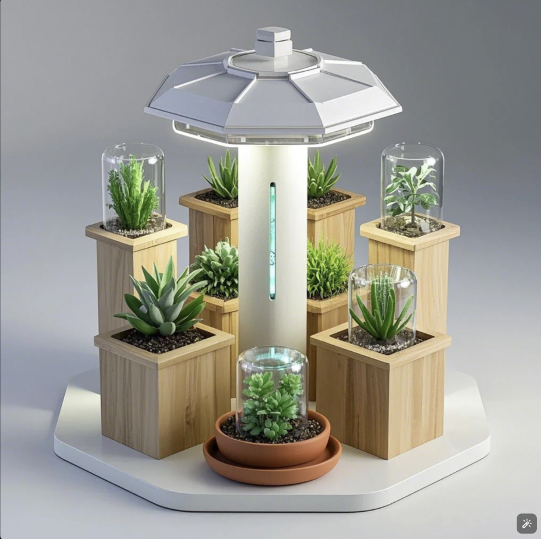
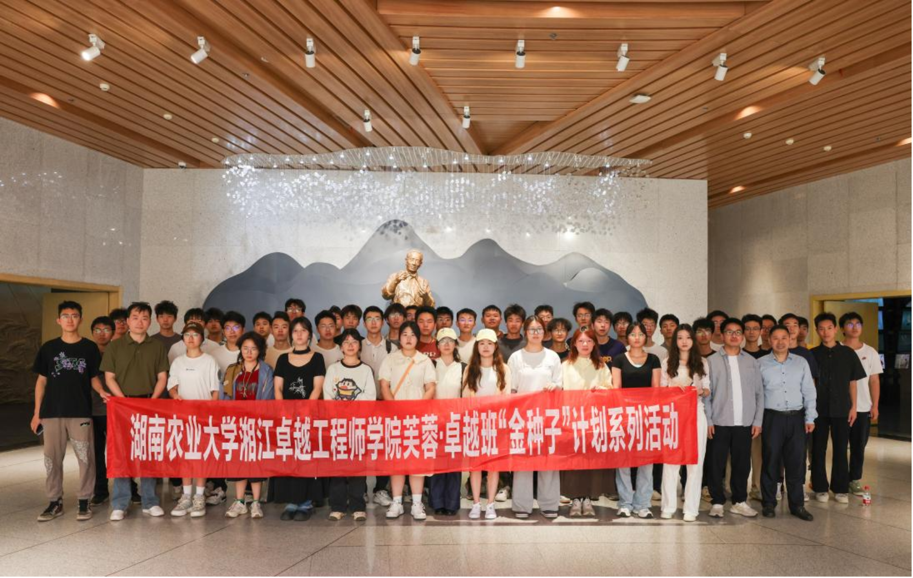
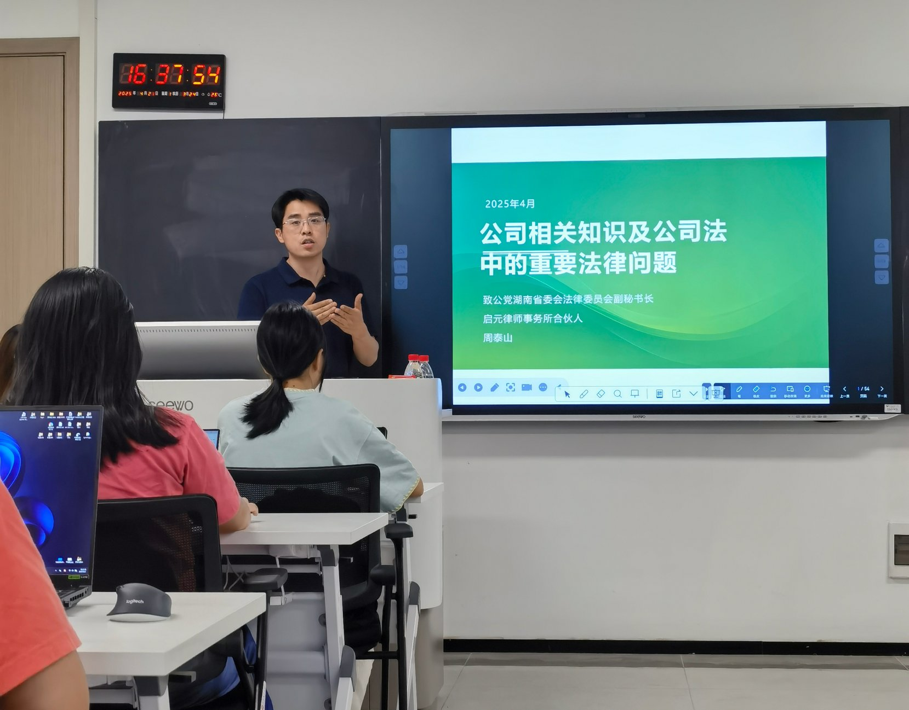
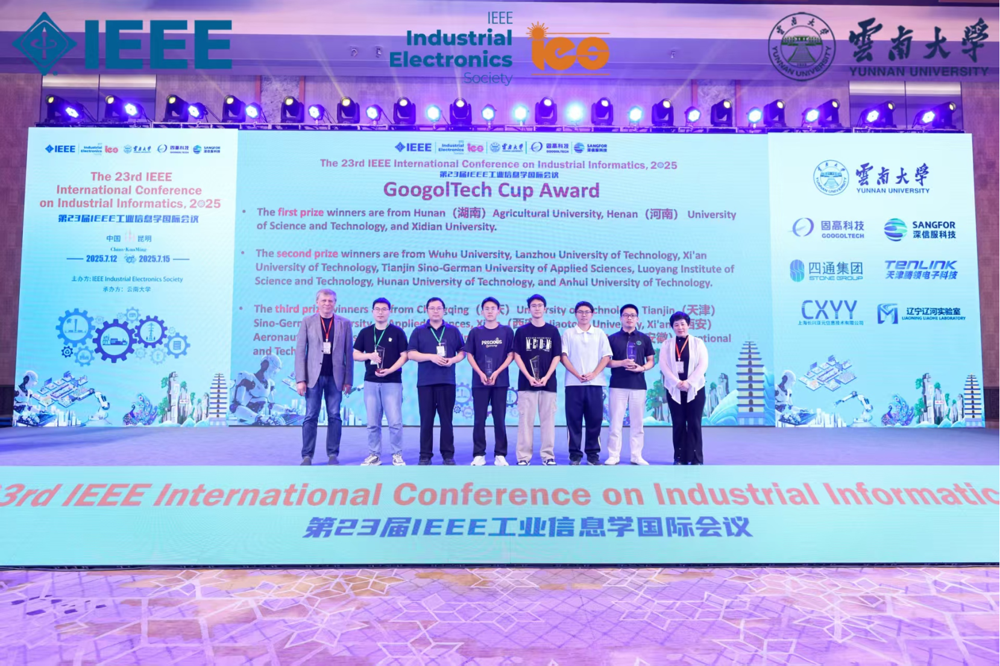
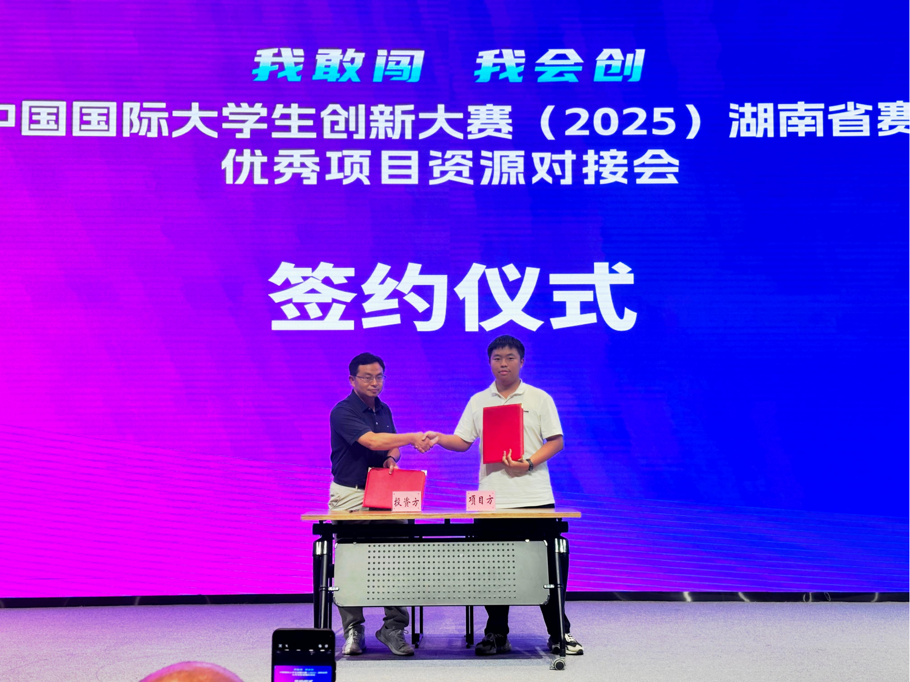

金种破土 芙蓉花开：芙蓉区“金种子”计划赋能青年创新逐梦
实验室里的构想，如何变成市场认可的产品？芙蓉区用创业资金支持和全链条孵化服务，给出了一个关键支点。
岳麓山实验室4号楼的工作室里，凌晨的灯光仍亮着，几个年轻身影围着一台搭载着传感器的多肉盆栽反复调试，键盘敲击的节奏里满是干劲。这是黎健毓和他的团队，正在完善他们的智能多肉生长装置。此前，这个18岁的湖南农业大学湘江卓越工程师学院学生，曾因项目资金短缺、核心设备采购搁置、技术转化难而苦恼。
《长沙市芙蓉区关于实施“金种子”计划支持湖南农业大学湘江卓越工程师学院高质量发展的十条措施》（简称“芙十条”）政策落地，10万元天使投资注入、政策层面的创业扶持跟进，团队项目进展呈现加速度。如今他们不仅成立了昇态风暴智能科技公司，更明确了从多肉养护到室内生态的发展方向。

多肉植物生长器外观渲染图
自今年3月政策发布以来，芙蓉区以真金白银的投入、体系化的支撑，让更多像黎健毓这样的卓越学院团队，借着这股政策东风，将校园里的创新想法，变成推向市场的实际成果。
校地协同筑根基：育种先育生长力
依托与湖南农业大学共建“湘江卓越工程师学院”的资源优势，芙蓉区在“芙十条”发布当天便明确，要以深化校地合作为核心，为创新创业“金种子”筑牢成长土壤。芙蓉区委书记崔晓表示，在支持大学生创新创业上，芙蓉区不搞噱头、不玩虚招，省、市政策坚决兑现，省、市政策以外的诚意“加码”，从政府到企业，从高校到创业者，每个人都应为创新发展贡献力量。
芙蓉区深谙“育好种子先筑好苗圃”的道理，以深度校地合作为抓手，为湖南农业大学湘江卓越工程师学院量身打造了全方位的人才培养体系。

卓越学子参观隆平水稻博物馆隆平厅
在思政教育的融合创新上，芙蓉区更是打破校园与社会的壁垒，今年7月开展“初心如炬·青创向党”主题党日活动，组织创新创业大学生代表参观白果园青年创业街区、湘江评论陈列馆，分享初心故事、重温入党誓词，让青年在实地感悟中坚定理想。常态化开展的“文心芙蓉・大咖面对面”暨“金种子”思政课活动，思政导师团涵盖党校教师、劳动模范、优秀企业家等力量。定期开展的主题讲堂上，既有革命先辈的红色故事分享，也有行业先锋的奋斗历程讲述。“我们通过馆内的珍贵照片、生动影像和所陈列的实物真切体悟到了袁隆平院士的攻关精神，这比单纯的课堂教学更能打动人。”参与活动的学生说。这种“理论+实践”的思政模式，让红色基因与创新精神在青年心中深度交融。

湖南启元律师事务所合伙人、法律实务专家周泰山授课
企业技术专家的深度参与，则让专业课程真正接上了产业地气。芙蓉区遴选辖区内农业科技、智能装备领域的龙头企业组建导师团队，推动企业专家直接参与课程开发与教学。华智生物、隆平高科等企业的技术骨干将产业真实需求融入课程设计，实现“课堂所学即岗位所用”。“我们开发的智能烟杆清理机项目，就是课堂上接触到企业需求后启动的，直接帮企业增效30%。”卓越学院学生团队介绍道。
校地合作的深度融合，正在塑造着新型创新人才。正如湖南农业大学湘江卓越工程师学院院长周智所言：“芙蓉区的支持让我们实现了从‘知识传授’到‘能力培养’的转变，学生们的创新更有方向、更接地气。”
政策护航促成长：护苗先厚养分基
“拿到扶持资金时，整个团队都沸腾了！”李升阳至今记得资金到账那天的情景。他负责的智能烟杆清理机项目，与黎健毓负责的多肉植物生长器项目、陈雅琰负责的教学机器人项目、徐智航负责的智能陪伴监护机器人项目一同，在3月的芙蓉区“金种子”项目评审中脱颖而出，共获得20万元专项投入。
如今，这些项目均已取得实质性进展：智能烟杆清理机项目已经并入学院无人农场项目，预计12月完成温室病虫害自动预警系统的研发；智能多肉生长装置项目目前已经完成了结构及外观设计，传感器集成板设计，应用程序同步开发中；教学机器人项目的小型样机已完成制作，具备自主移动及语音交互功能，应用程序同步开发中；智能陪伴监护机器人项目已经完成机器人结构及功能设计、系统架构搭建和已采用多模态交互架构构建运动控制与语音交互双核驱动的双层架构体系，预计12月份完成样机制作。
这四笔资金的注入，正是芙蓉区强化创新创业支持的一个缩影。作为“芙十条”的重要举措，扶持资金不是一次性的“输血”，而是伴随项目成长的“造血”过程。
资金之外，平台的支撑让创业之路愈加坚定。芙蓉区《关于打造芙蓉（隆平产业开发区）大学生创新创业基地的工作方案》明确了为入驻大学生创新创业项目提供三年培育期支持，其中工位区给予三年场地无偿使用，集中孵化区给予“一年免租一年减半”等扶持政策。目前已完成4期大学生创新创业路演，共计30个优质项目评审通过，现已有21个项目团队完成工商注册手续，12个项目团队入驻基地办公，创业氛围如火如荼。
对于青年人才最关心的就业创业保障，芙蓉区更是拿出了真招实策。经过认证的毕业生到芙蓉区工作，可在省市政策基础上额外享受配套补贴：博士研究生、硕士研究生、本科生分别享受5万元、2万元、0.5万元就业补贴；创业的则可享受最高3万元的租房和生活补贴，在区内购买首套商品住房的博士、硕士还能分别获得8万元、5万元安家补贴 。“这些政策打消了我们的后顾之忧，毕业后留在芙蓉创业就业的决心更坚定了。”入驻的长沙市耘清智能农业科技有限公司核心团队成员涂腾辉说。
辐射带动成生态：兴产先让一苗荣
为确保各项支持精准落地，芙蓉区定期召开专题调度会，开展常态化联络。“上次我们反映的企业注册加急办理问题，调度会后马上就协调解决了。”一位创业项目负责人对这种高效服务赞不绝口。芙蓉区用常态化的政策保障，为“金种子”成长提供了最适宜的环境。
“原本只是想解决多肉植物生长的补光问题，没想到能带动这么多同学一起创业。”黎健毓的感慨，道出了“金种子”计划的辐射效应。目前，“金种子”计划已直接支持卓越学院4个核心项目，辐射带动湖南农业大学其他学院的多个项目，更间接激发了全区大学生的创新创业热情。

温室病虫害自动预警系统项目获得“固高杯”全国产业命题智慧农业赛道一等奖

基于双模协同的数字化节能型微滤机在水产养殖废水循环上的产业化应用项目获得中国国际大学生创新大赛（2025）湖南省赛产业赛道金奖
在这片涌动着无限可能的创新沃土上，青年创业者的成长故事正以蓬勃之势不断铺展新篇。李升阳团队率先在其中写下亮眼一笔——他们凭借温室病虫害自动预警项目，在第二十三届IEEE工业信息学国际会议暨2024年“固高杯”工业控制及数智化系统设计大赛中，一举斩获智慧农业板块一等奖，用精准的技术实力印证了青年创客的潜力与担当；另一项聚焦生态与产业融合的成果同样闪耀，基于双模协同的数字化节能型微滤机，凭借在水产养殖废水循环领域的产业化突破，成功摘得中国国际大学生创新大赛（2025）湖南省赛产业赛道金奖，让创新智慧在绿色发展赛道上绽放光芒。
这份接二连三的成长与突破，从来不是偶然的幸运，而是源于这片土地的悉心滋养。芙蓉区始终以务实之举为基，为每一颗怀揣梦想的创新创业“金种子”深耕更丰饶的土壤、搭建更广阔的舞台，让这片充满活力的热土，持续见证更多青年创客的理想生根、梦想绽放。
从校地协同的人才培养，到全方位的政策护航，再到创新创业生态的形成，芙蓉区用“真金白银”的投入和“真抓实干”的服务，让“金种子”计划真正落地生根。在这片曾孕育出杂交水稻奇迹的土地上，新一代青年创业者正借着政策东风，书写着校地合作、产教融合的新篇章。未来，更多“金种子”必将在这里长成参天大树，为芙蓉区高质量发展注入源源不断的青春动能。